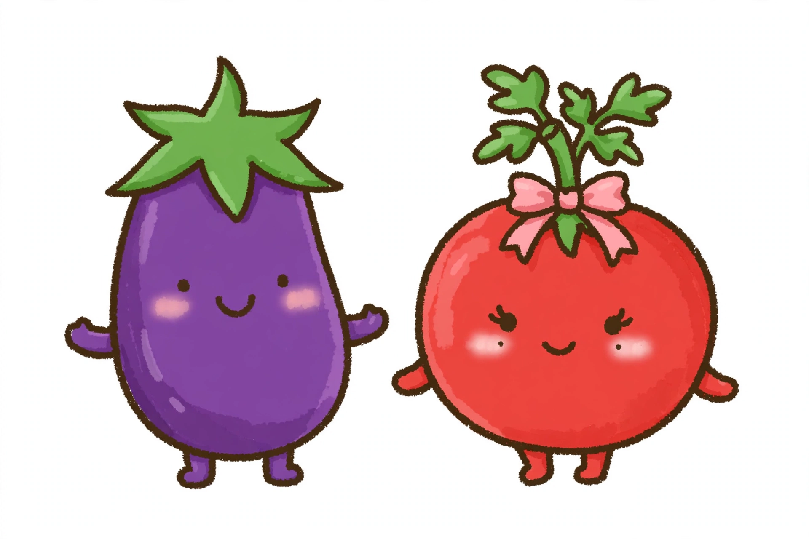
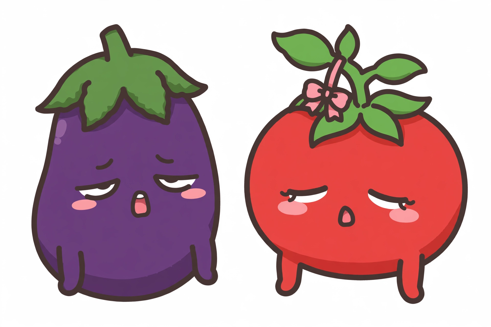
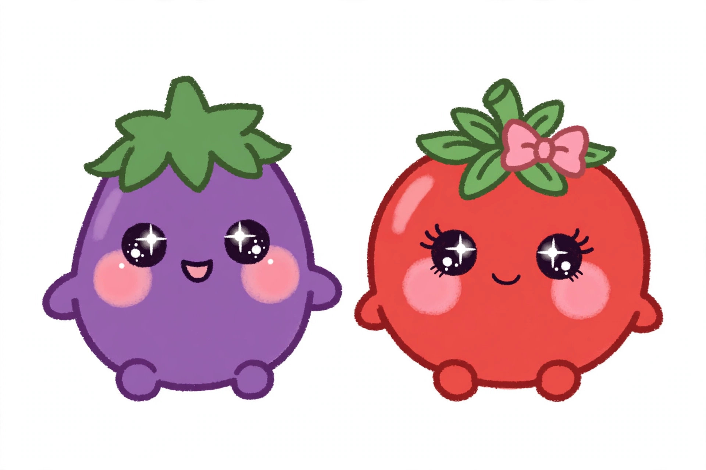
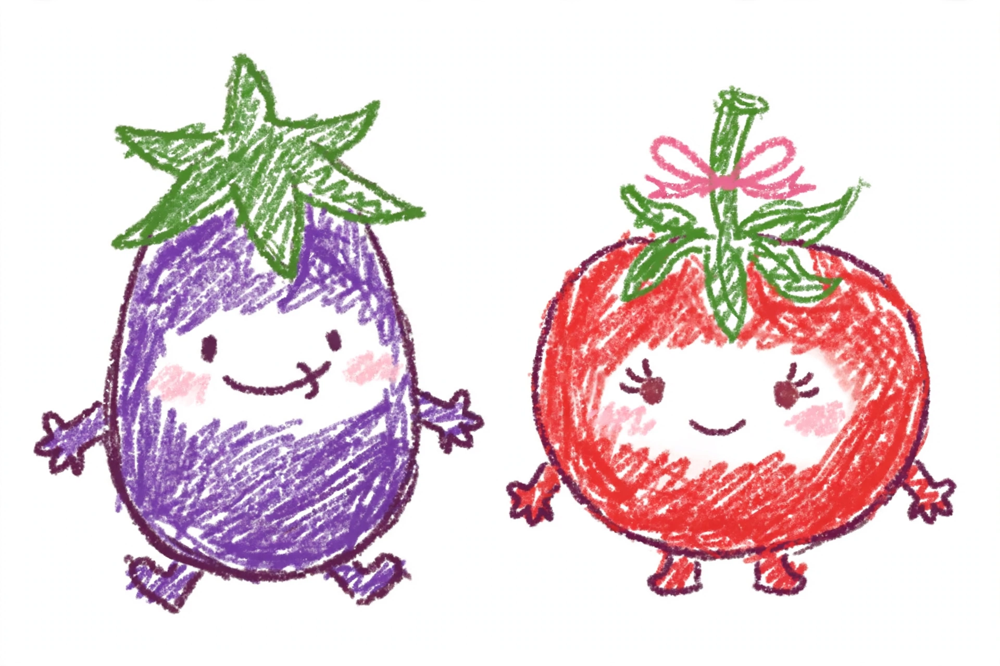
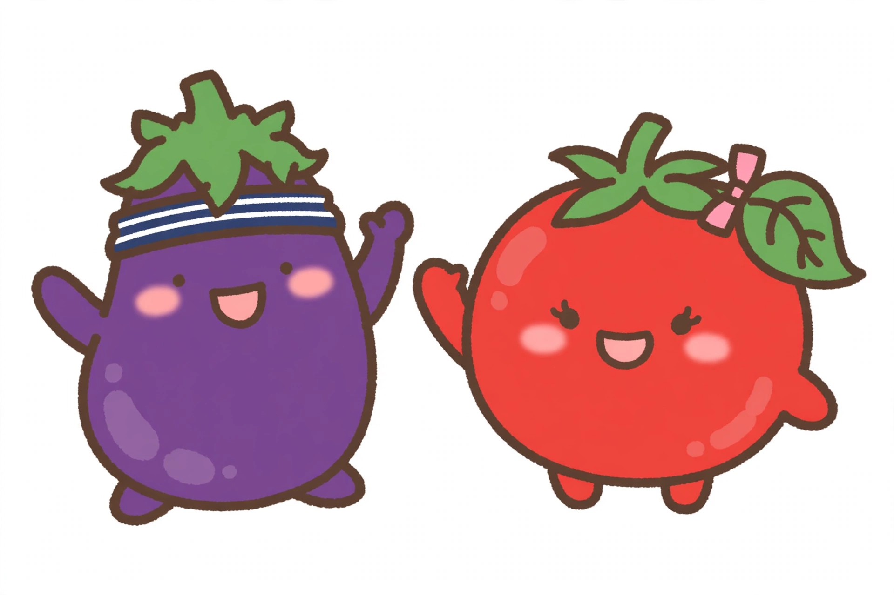
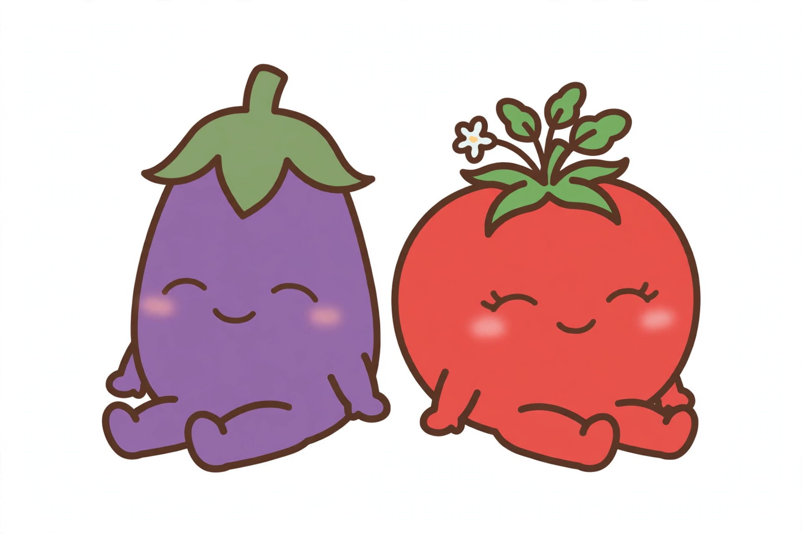
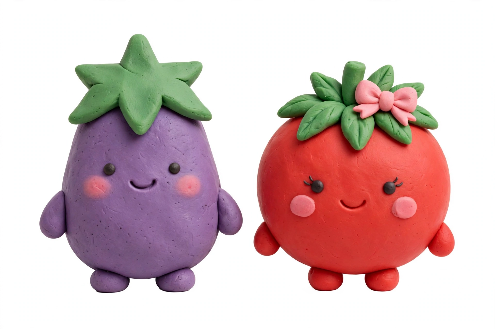
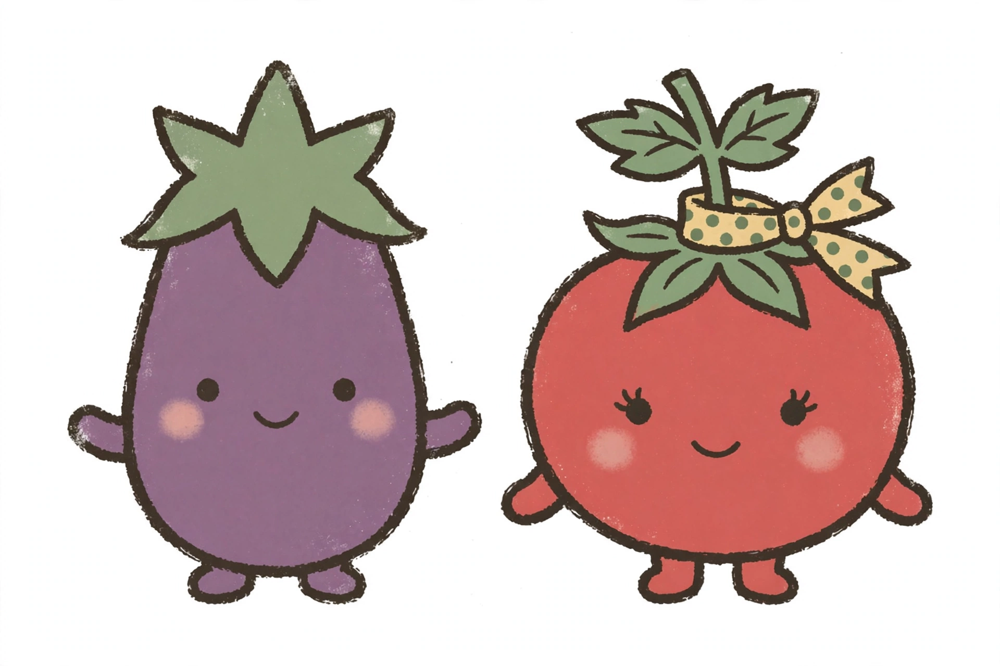
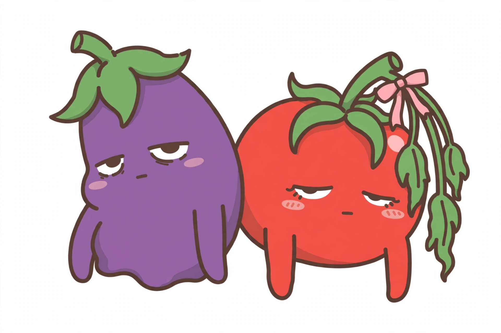
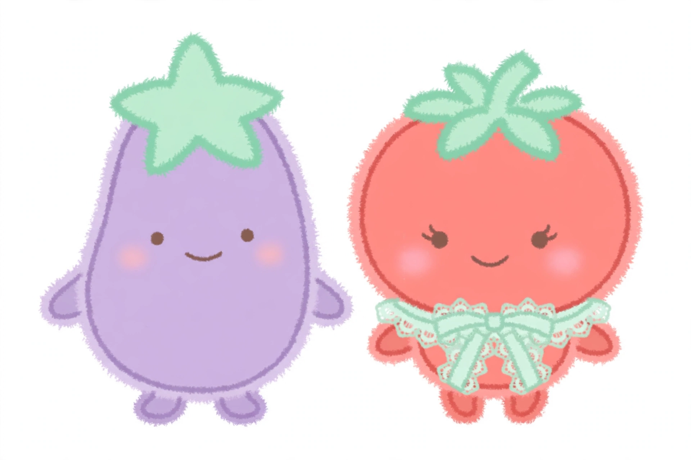

1王道ゆるちび

点目＋小さな笑口の王道ペア。トマトはピンクのリボンとまつ毛、ナスはすっきりした男の子。
10案の中でいちばん基準になる、素直で使いやすい形です。
10案の中でいちばん基準になる、素直で使いやすい形です。
2ねむねむペア

半目とあくびの眠そうな2人。姿勢もだらっと崩して、脱力感を前面に出した案です。
3ぽやぽやベビー

いちばん丸くて小さい、赤ちゃん寄りのちび感。キラキラした目と大きな頬が特徴です。
4手描きラフ

クレヨンの落書き風。線も塗りもあえてガタガタにして、10案でいちばん手作り感のある緩さです。
5ゆるスポーティ

ハチマキのナスと、手を振るトマト。元気なポーズでも輪郭は緩く、力の抜けた明るさです。
6おっとり座り

ちょこんと座って閉じ目の穏やかなペア。トマトのヘタには小花つき。静かで和む案です。
7ぷにぷに粘土

粘土細工みたいな質感で、ぷにっとした柔らかい立体感。触りたくなる可愛さの案です。
8レトロポップ

昭和レトロな色味と単純な形。トマトは水玉リボン。少し懐かしい空気の案です。
9だらけMAX

とろけるように体が崩れた、脱力の極み。半目の「やる気ゼロ」な顔が推しの案です。
10ふわふわパステル

パステル色とレースのリボンで、夢かわ寄りの柔らかさ。輪郭もふんわりさせた案です。